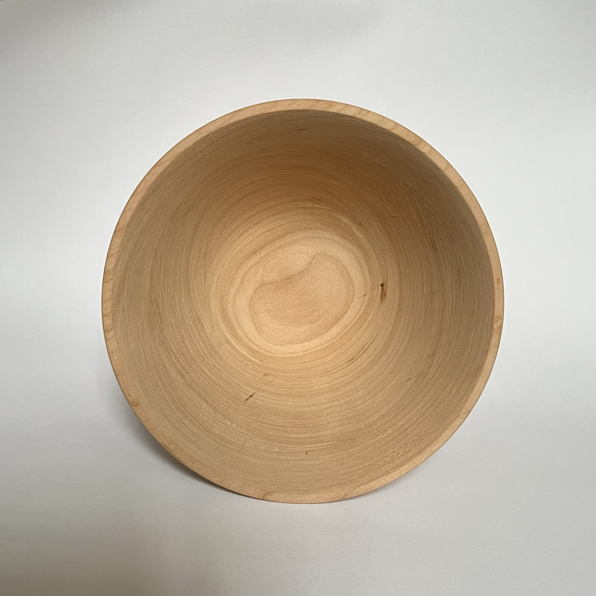
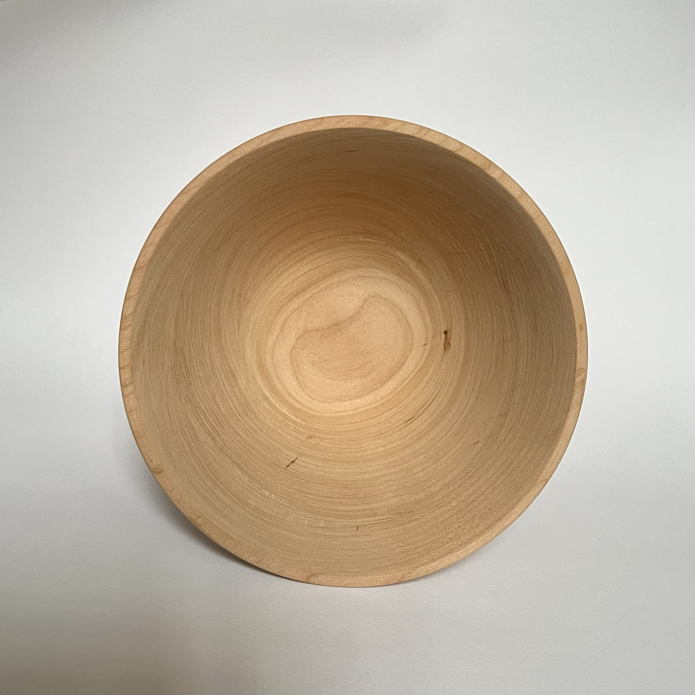

Handmade Bowl
Specifications
Materials: cherry wood
Size: 16cm x 12cm
A handmande bowl made from cherry wood. When making this bowl, the main function that I had in mind was serving noodle soup or other noodle dishes. However, it can also serve other types of food as well. This was my first attempt at creating a bowl, other than a small practice bowl that I made to familiarize myself with using the lathe. Going through the full process of making a wooden bowl helped me better understand how to work with wood and the tools involved.
Photos
 


3D Model
Drag mouse to orbit